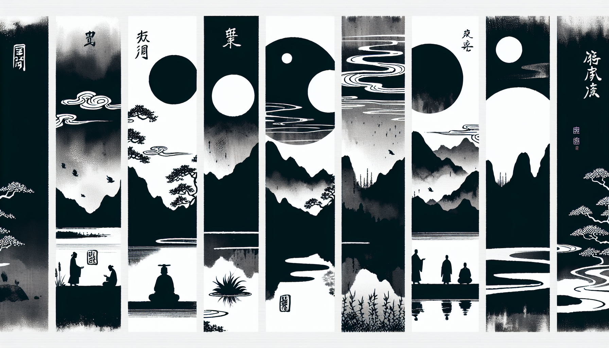

七十五巻 巻一覧
正法眼藏第23 都機
本紹介ページの導入・語彙・深掘り・クイズは tools/regen_volume_intro_from_corpus.py が OpenAI API で生成したものです（入力は当巻の原文からの短い抜粋のみ）。内容はモデル出力のため、重要箇所は必ず原文・教本と照合してください。
出典: https://shomonji.or.jp/zazen/doc/genzou.html
原文・現代語訳の全文は 全文ページを参照してください。
この巻の紹介（導入）
この巻では、仏の真法身とその表現について論じられており、月の比喩を通じて、仏道の本質を探求しています。
特に、月の形や存在が人間の理解にどのように影響するかを考察し、心と月の関係を深く掘り下げています。
語彙の足場
- 仏眞法身：仏の本質的な存在を指し、虚空のように無限であり、物事に応じて形を現すとされる。
- 心月：心と月を同一視し、心の状態が月のように変化することを示す比喩。
- 呑却：何かを受け入れたり、取り込んだりすることを意味し、特に心の状態や理解が他のものを包み込む様を表す。
- 吐却：何かを放出したり、表現したりすることを示し、心の状態が外に現れる様子を表す。
- 圓成：完全に成就することを意味し、特に仏道においては真理の実現を指す。
原文（要点の抜粋）
当巻の冒頭付近からの短い抜粋です。長い引用は載せていません。 全文は全文ページを参照してください。出典はリポジトリ内 doc/正法眼蔵.txt です。原文の参照元: https://shomonji.or.jp/zazen/doc/genzou.html
諸月の圓成すること、前三三のみにあらず、後三三のみにあらず。圓成の諸月なる、前三三のみにあらず、後三三のみにあらず。このゆゑに、
釋迦牟尼佛言く、佛眞法身、猶若虛空。應物現形、如水中月（佛の眞法身は、猶し虛空の若し。物に應じて形を現はす、水中の月の如し）。
いはゆる如水中月の如如は水月なるべし。水如、月如、如中、中如なるべし。相似を如と道取するにあらず、如は是なり。佛眞法身は虛空の猶若なり。この虛空は、猶若の佛眞法身なり。佛眞法身なるがゆゑに、盡地盡界、盡法盡現、みづから虛空なり。現成せる百草萬像の猶若なる、しかしながら佛眞法身なり、如水如月なり。月のときはかならず夜にあらず、夜かならずしも暗にあらず。ひとへに人間の小量にかかはることなかれ。日月なきところにも晝夜あるべし、日月は晝夜のためにあらず。日月ともに如如なるがゆゑに、一月兩月にあらず、千月萬月にあらず。月の自己、たとひ一月兩月の見解を保任すといふとも、これは月の見解なり、かならずしも佛道の道取にあらず、佛道の知見にあらず。しかあれば、昨夜たとひ月ありといふとも、今夜の月は昨月にあらず、今夜の月は初中後ともに今夜の月なりと參究すべし。月は月に相嗣するがゆゑに、月ありといへども新舊にあらず。
盤山寶積禪師云、心月孤圓、光呑萬象。光非照境、境亦非存。光境倶亡、復是何物（心月孤圓、光、萬象を呑めり。光、境を照らすに非ず、境亦た存ずるに非ず。光境倶に亡ず、復た是れ何物ぞ）。
いまいふところは、佛祖佛子、かならず心月あり。月を心とせるがゆゑに。月にあらざれば心にあらず、心にあらざる月なし。孤圓といふは、虧闕せざるなり。兩三にあらざるを萬象といふ。萬象これ月光にして萬象にあらず。このゆゑに光呑萬象なり。萬象おのづから月光を呑盡せるがゆゑに、光の光を呑却するを、光呑萬象といふなり。たとへば、月呑月なるべし、光呑月なるべし。ここをもて、光非照境、境亦非存と道取するなり。得恁麼なるゆゑに、應以佛身得度者のとき、卽現佛身而爲説法なり。應以普現色身得度者のとき、卽現普現色身而爲説法なり。これ月中の轉法輪にあらずといふことなし。たとひ陰精陽精の光象するところ、火珠水珠の所成なりとも、卽現現成なり。この心すなはち月なり、この月おのづから心なり。佛祖佛子の心を究理究事すること、かくのごとし。
古佛いはく、一心一切法、一切法一心。
しかあれば、心は一切法なり、一切法は心なり。心は月なるがゆゑに、月は月なるべし。心なる一切法、これことごとく月なるがゆゑに、遍界は遍月なり。通身ことごとく通月なり。たとひ直須萬年の前後三三、いづれか月にあらざらん。いまの身心依正なる日面佛月面佛、おなじく月中なるべし。生死去來ともに月にあり。盡十方界は月中の上下左右なるべし。いまの日用、すなはち月中の明明百草頭なり、月中の明明祖師心なり。
舒州投子山慈濟大師、因僧問、月未圓時如何（月未圓なる時、如何）。
師云、呑却三箇四箇（三箇四箇を呑却す）。
僧云、圓後如何（圓なる後、如何）。
師云、吐却七箇八箇（七箇八箇を吐却す）。
いま參究するところは、未圓なり、圓後なり、ともにそれ月の造次なり。月に三箇四箇あるなかに、未圓の一枚あり。月に七箇八箇あるなかに、圓後の一枚あり。呑却は三箇四箇なり。このとき、月未圓時の見成なり。吐却は七箇八箇なり。このとき、圓後の見成なり。月の月を呑却するに、三箇四箇なり。呑却に月ありて現成す、月は呑却の見成なり。月の月を吐却するに、七箇八箇あり。吐却に月ありて現成す。月は吐却の現成なり。このゆゑに、呑却盡なり、吐却盡なり。盡地盡天吐却なり、蓋天蓋地呑却なり。呑自呑他すべし、吐自吐他すべし。
図解（4コマ・AI生成）
教義の根拠は原文・出典に従い、漫画は比喩の補助に留めてください。

深掘り（読解の手掛かり）
- 仏の真法身は虚空のようであり、物に応じて形を変える。
- 月の比喩を用いて、心と仏道の関係を探求する。
- 心と月は相互に依存し、どちらも存在するためには他を必要とする。
確認（形成評価）
各設問の下の「採点」で正誤を表示します（ブラウザ内のみ。ログは送りません）。